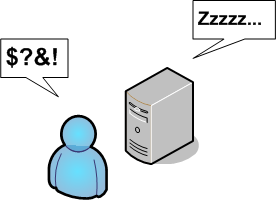

Up To: Contents
Up To: Contents
 See Also: Notifications
See Also: Notifications
Introduction
Nagios allows you to schedule periods of planned downtime for hosts and service that you're monitoring. This is useful in the event that you actually know you're going to be taking a server down for an upgrade, etc.
Scheduling Downtime
You can schedule downtime for hosts and service through the extinfo CGI (either when viewing host or service information). Click in the "Schedule downtime for this host/service" link to actually schedule the downtime.
Once you schedule downtime for a host or service, Nagios will add a comment to that host/service indicating that it is scheduled for downtime during the period of time you indicated. When that period of downtime passes, Nagios will automatically delete the comment that it added. Nice, huh?
Fixed vs. Flexible Downtime
When you schedule downtime for a host or service through the web interface you'll be asked if the downtime is fixed or flexible. Here's an explanation of how "fixed" and "flexible" downtime differs:
"Fixed" downtime starts and stops at the exact start and end times that you specify when you schedule it. Okay, that was easy enough...
"Flexible" downtime is intended for times when you know that a host or service is going to be down for X minutes (or hours), but you don't know exactly when that'll start. When you schedule flexible downtime, Nagios will start the scheduled downtime sometime between the start and end times you specified. The downtime will last for as long as the duration you specified when you scheduled the downtime. This assumes that the host or service for which you scheduled flexible downtime either goes down (or becomes unreachable) or goes into a non-OK state sometime between the start and end times you specified. The time at which a host or service transitions to a problem state determines the time at which Nagios actually starts the downtime. The downtime will then last for the duration you specified, even if the host or service recovers before the downtime expires. This is done for a very good reason. As we all know, you might think you've got a problem fixed, but then have to restart a server ten times before it actually works right. Smart, eh?
Triggered Downtime
When scheduling host or service downtime you have the option of making it "triggered" downtime. What is triggered downtime, you ask? With triggered downtime the start of the downtime is triggered by the start of some other scheduled host or service downtime. This is extremely useful if you're scheduling downtime for a large number or hosts or services and the start time of the downtime period depends on the start time of another downtime entry. For instance, if you schedule flexible downtime for a particular host (because its going down for maintenance), you might want to schedule triggered downtime for all of that hosts's "children".
How Scheduled Downtime Affects Notifications
When a host or service is in a period of scheduled downtime, Nagios will not allow normal notifications to be sent out for the host or service. However, a "DOWNTIMESTART" notification will get sent out for the host or service, which will serve to put any admins on notice that they won't receive upcoming problem alerts.
When the scheduled downtime is over, Nagios will allow normal notifications to be sent out for the host or service again. A "DOWNTIMEEND" notification will get sent out notifying admins that the scheduled downtime is over, and they will start receiving normal alerts again.
If the scheduled downtime is cancelled prematurely (before it expires), a "DOWNTIMECANCELLED" notification will get sent out to the appropriate admins.
Overlapping Scheduled Downtime
I like to refer to this as the "Oh crap, its not working" syndrome. You know what I'm talking about. You take a server down to perform a "routine" hardware upgrade, only to later realize that the OS drivers aren't working, the RAID array blew up, or the drive imaging failed and left your original disks useless to the world. Moral of the story is that any routine work on a server is quite likely to take three or four times as long as you had originally planned...
Let's take the following scenario:
If you schedule overlapping periods of downtime for a host or service (in this case the periods were 7:40pm-9:30pm and 9:20pm-1:30am), Nagios will wait until the last period of scheduled downtime is over before it allows notifications to be sent out for that host or service. In this example notifications would be suppressed for host A until 1:30am Tuesday morning.